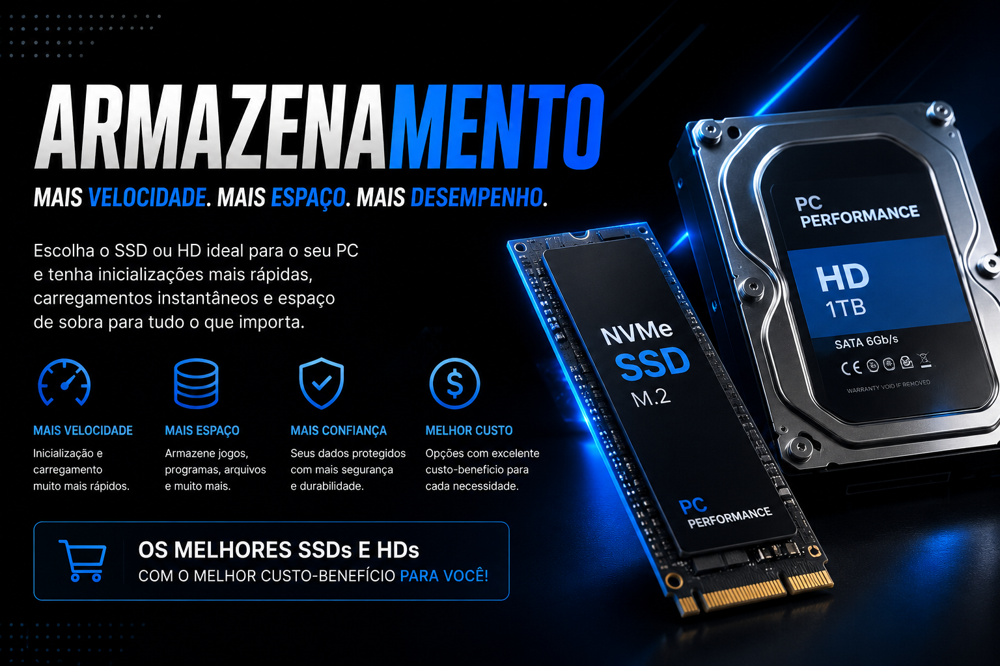

O armazenamento é o componente
responsável por guardar arquivos,
programas, jogos e o sistema operacional.
Os principais tipos são SSD e HD,
cada um com suas vantagens.
Inicialização muito mais rápida.
Carregamento veloz em jogos e programas.
Menor consumo de energia e mais silêncio.
O HD oferece maior capacidade
por um preço mais acessível.
É indicado para armazenar
arquivos grandes e backups.
O SSD é muito mais rápido
que o HD na leitura e gravação
de arquivos e abertura de programas.
256GB e 512GB são comuns em SSDs.
HDs normalmente possuem 1TB ou mais,
sendo ideais para grande armazenamento.
| Característica | SSD | HD |
|---|---|---|
| Velocidade | Alta | Média |
| Capacidade | Até 4TB | Até 20TB |
| Preço | Mais caro | Mais barato |
| Ruído | Não faz barulho | Pode fazer barulho |
SSD NVMe com ótima velocidade.
Ideal para jogos e estudos.
Excelente custo-benefício.
Boa opção para uso diário.
Inicialização rápida do sistema.
Preço acessível.
Muito espaço para jogos.
Alta velocidade de leitura.
Ideal para gamers.
Grande capacidade de armazenamento.
Ótimo para vídeos e backups.
Excelente custo por GB.